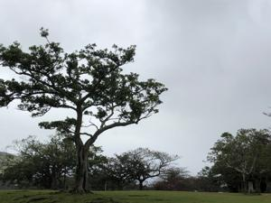
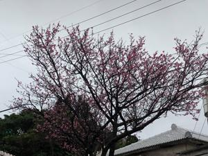

うるがいの話 ある日
最新: チャット【うるがいの話 ある日】とは 一日だけのプログです
『うるがいの話』の最新一日だけのプログで、通信料が少なく経済的だ。カニの画像をクリックすると全ての日付が載る『うるがいの話』サイトを表示します
|
|
【うるがいの話】 うるがい(ｳﾙｶﾞｲ urugai)とは、『もずくがに』の名前でとても大きくなります。 |
|---|---|
|
|
【カミマヤーの話】 猫のことを方言でマヤーといいます。カミマヤー（kamimayaa）とは、神の猫のことです。 |
|
【タナガーの話】 たながー（ﾀﾅｶﾞｰtanagaa）とは手長えびのことで、何種類かあり大きいのは車 エビぐらいになります。 |

|
【ぶながぁの話】 ぶながー(bunagaa)とは、赤い髪の毛、赤い身体、そして身長は１ｍ２０ｃｍ ぐらい、川の蟹を食べているの目撃された。場所は沖縄県国頭郡大宜味村のと ある村僕の隣近所に住んでいる爺さんから、聞いた話です。 |
|
|
【ギーマの話】 ギーマ(giima)とは、山原の里山に咲くスズランに似た、 花を付けます。実は食べられます、 気が付くと口の周りが紫になっています。 |
2022年01月31日 (月）チャット
16:05
 
今日から（多分１８時以降）、動画の研修が始まる予定だが、昼間２時過ぎに
『録画希望です！！』という、書き込みがあった。うえー、先週の木曜日に締
め切っているのに。！！の意気込みが、この人どうなるのだろう。動画を研修
する上でのパソコンの性能が、イマイチなので上等のを購入しようとデルのサ
イトをみている。書いてある内容が正確に分からなかったので、初めてデルと
ネット上でチャットした。 対応していたのが外国の人だったので、最後には
なぜか英語モードでチャットする。英語での応答を期待したのだが、まじめに
日本語だった。したのやり取りは、チャットのログの一部、お客様は私
チャット開始: 日曜日, 1月 30, 2022, 22:03:01 (-0600)
チャットの開始者: DELL.CONNECT.DEFAULT
チャットの移行元 Dell Virtual Assistant 移行先 Dell Advisor - Yinglan
( 3m 13s ) Dell Advisor - Yinglan: お問い合わせ頂き誠にありがとうござ
います。デル・テクノロジーズ株式会社個人営業部チャット担当キンエイラン
と申します。
( 3m 13s ) Dell Advisor - Yinglan: 早速ではございますが、本日のお問い
合わせ内容をお教えいただけますでしょうか。
・・・・（割愛）
( 4m 50s ) Dell Advisor - Yinglan: 大変お待たせいたしました。
( 5m 11s ) お客様: ハードドライブは1TB ありますか
( 5m 14s ) Dell Advisor - Yinglan: ご検討製品は最初から256GB＋１TBと
なりますので、2個のハードドライブが内蔵しております。
( 5m 37s ) お客様: OK 、ありがとうございます
( 7m 11s ) お客様: ああ、追加の質問です、いいですか
( 7m 45s ) お客様: DisplayPort 1.4のケーブルは納品されますか
( 9m 15s ) Dell Advisor - Yinglan: いいえ
( 9m 34s ) Dell Advisor - Yinglan: 本体のみご注文時はモニターへの接続
ケーブルは付属しておりません。
( 9m 48s ) お客様: OK,THANK YOU GOOD BY
( 9m 59s ) Dell Advisor - Yinglan: ご注文お待ちしております。
１６時０１分 ビットコインの総資産 ￥１２、３４８↓